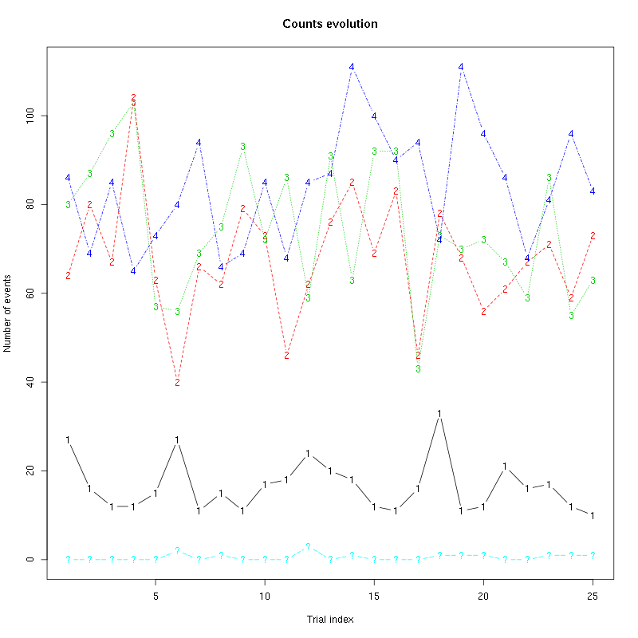
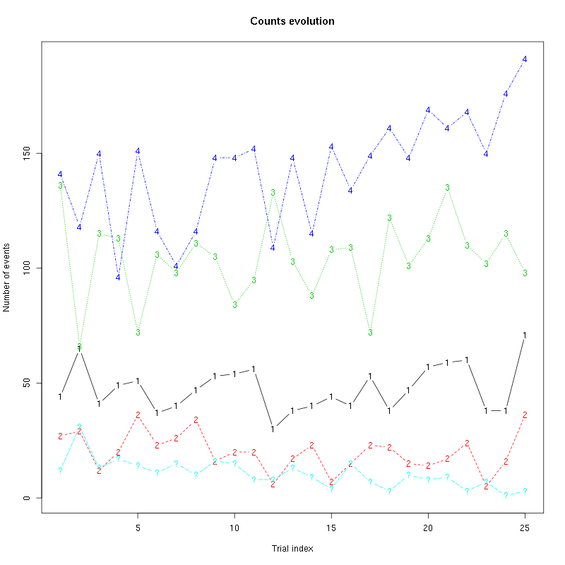

Sorting data set 20000421 tetrode D2 (channels 13, 14, 15, 16)
Table of Contents
- 1. Introduction
- 2. Tetrode D2 (channels 13, 14, 15, 16) analysis
- 2.1. Loading the data
- 2.2. Five number summary
- 2.3. Plot the data
- 2.4. Data normalization
- 2.5. Spike detection
- 2.6. Cuts
- 2.7. Events
- 2.8. Removing obvious superposition
- 2.9. Dimension reduction
- 2.10. Exporting for
GGobi - 2.11. kmeans clustering with 5 and 4 clusters
- 2.12. Long cuts creation
- 2.13. Peeling
- 2.14. Getting the spike trains
- 2.15. Getting the inter spike intervals and the forward and backward recurrence times
- 2.16. Testing "all at once"
- 3. Analyzing a sequence of trials
- 4. Systematic analysis of the 30 trials from
1-Hexanol - 5. 25 trials with
Hexanal - 6. 25 trials with
Cis-3-Hexen-1-ol - 7. 25 trials with
Trans-2-Hexen-1-ol - 8. 25 trials with
1-Hexen-3-ol - 9. 25 trials with
3-Pentanone - 10. 25 trials with
1-Heptanol - 11. 25 trials with
1-Octanol (10^-0) first - 12. 25 trials with
2-Heptanone - 13. 25 trials with
3-Heptanone - 14. 25 trials with
Citral - 15. 25 trials with
Apple - 16. 25 trials with
Mint - 17. 25 trials with
Strawberry - 18. 25 trials with
Amyl Acetate - 19. 25 trials with
Octaldehyde - 20. 25 trials with
1-Octanol (10^-5) - 21. 25 trials with
1-Octanol (10^-4) - 22. 25 trials with
1-Octanol (10^-3) - 23. 25 trials with
1-Octanol (10^-2) - 24. 25 trials with
1-Octanol (10^-1) - 25. 25 trials with
1-Octanol (10^-0) second
1 Introduction
This is the description of how to do the (spike) sorting of tetrode D2 (channels 13, 14, 15, 16) from data set locust20000421.
1.1 Getting the data
The data are in file locust20000421.hdf5 located on zenodo and can be downloaded interactivelly with a web browser or by typing at the command line:
wget https://zenodo.org/record/21589/files/locust20000421.hdf5
In the sequel I will assume that R has been started in the directory where the data were downloaded (in other words, the working direcory should be the one containing the data.
The data are in HDF5 format and the easiest way to get them into R is to install the rhdf5 package from Bioconductor. Once the installation is done, the library is loaded into R with:
library(rhdf5)
We can then get a (long and detailed) listing of our data file content with (result not shown):
h5ls("locust20000421.hdf5")
We can get the content of LabBook metadata from the shell with:
h5dump -a "LabBook" locust20000421.hdf5
1.2 Getting the code
The code can be sourced as follows:
source("https://raw.githubusercontent.com/christophe-pouzat/zenodo-locust-datasets-analysis/master/R_Sorting_Code/sorting_with_r.R")
2 Tetrode D2 (channels 13, 14, 15, 16) analysis
We now want to get our "model", that is a dictionnary of waveforms (one waveform per neuron and per recording site). To that end we are going to use the first 60 s of data contained in the Spontaneous Group (in HDF5 jargon).
2.1 Loading the data
So we start by loading the data from channels 13, 14, 15, 16 into R:
lD = rbind(cbind(h5read("locust20000421.hdf5", "/Spontaneous/ch13"),
h5read("locust20000421.hdf5", "/Spontaneous/ch14"),
h5read("locust20000421.hdf5", "/Spontaneous/ch15"),
h5read("locust20000421.hdf5", "/Spontaneous/ch16")))
dim(lD)
| 892928 |
| 4 |
2.2 Five number summary
We get the Five number summary with:
summary(lD,digits=2)
| Min. :1541 | Min. :1462 | Min. :1267 | Min. :1670 |
| 1st Qu.:2008 | 1st Qu.:2005 | 1st Qu.:2022 | 1st Qu.:2023 |
| Median :2047 | Median :2049 | Median :2065 | Median :2063 |
| Mean :2046 | Mean :2048 | Mean :2063 | Mean :2063 |
| 3rd Qu.:2085 | 3rd Qu.:2092 | 3rd Qu.:2106 | 3rd Qu.:2103 |
| Max. :2498 | Max. :2480 | Max. :2612 | Max. :2392 |
It shows that the channels have very similar properties as far as the median and the inter-quartile range (IQR) are concerned. The minimum is much smaller on the third channel. This suggests that the largest spikes are going to be found here (remember that spikes are going mainly downwards).
2.3 Plot the data
We "convert" the data matrix lD into a time series object with:
lD = ts(lD,start=0,freq=15e3)
We can then plot the whole data with (not shown since it makes a very figure):
plot(lD)
2.4 Data normalization
As always we normalize such that the median absolute deviation (MAD) becomes 1:
lD.mad = apply(lD,2,mad) lD = t((t(lD)-apply(lD,2,median))/lD.mad) lD = ts(lD,start=0,freq=15e3)
Once this is done we explore interactively the data with:
explore(lD,col=c("black","grey70"))
Most spikes can be seen on the 4 recording sites and there are different spike waveform!
2.5 Spike detection
Since the spikes are mainly going downwards, we will detect valleys instead of peaks:
lDf = -lD filter_length = 3 threshold_factor = 5 lDf = filter(lDf,rep(1,filter_length)/filter_length) lDf[is.na(lDf)] = 0 lDf.mad = apply(lDf,2,mad) lDf_mad_original = lDf.mad lDf = t(t(lDf)/lDf_mad_original) thrs = threshold_factor*c(1,1,1,1) bellow.thrs = t(t(lDf) < thrs) lDfr = lDf lDfr[bellow.thrs] = 0 remove(lDf) sp0 = peaks(apply(lDfr,1,sum),15) remove(lDfr) sp0
eventsPos object with indexes of 1615 events. Mean inter event interval: 551.86 sampling points, corresponding SD: 584.61 sampling points Smallest and largest inter event intervals: 17 and 6721 sampling points.
Every time a filter length / threshold combination is tried, the detection is checked interactively with:
explore(sp0,lD,col=c("black","grey50"))
2.6 Cuts
We proceed as usual to get the cut length right:
evts = mkEvents(sp0,lD,49,50)
evts.med = median(evts)
evts.mad = apply(evts,1,mad)
plot_range = range(c(evts.med,evts.mad))
plot(evts.med,type="n",ylab="Amplitude",
ylim=plot_range)
abline(v=seq(0,400,10),col="grey")
abline(h=c(0,1),col="grey")
lines(evts.med,lwd=2)
lines(evts.mad,col=2,lwd=2)
Figure 1: Setting the cut length for the data from tetrode D2 (channels 13, 14, 15, 16). We see that we need 15 points before the peak and 20 after.
We see that we need roughly 15 points before the peak and 20 after.
2.7 Events
We now cut our events:
evts = mkEvents(sp0,lD,14,20) summary(evts)
events object deriving from data set: lD. Events defined as cuts of 35 sampling points on each of the 4 recording sites. The 'reference' time of each event is located at point 15 of the cut. There are 1615 events in the object.
We can as usual visualize the first 200 events with:
evts[,1:200]
Figure 2: First 200 events for the data from tetrode D2 (channels 1, 3, 5, 7).
There are few superpositions so we try to remove the most obvious ones before doing the dimension reduction.
2.8 Removing obvious superposition
Since some spikes have a pronounced early peak, we will look for superposition only on the late phase (last 10 points) of the events. We define function goodEvtsFct with:
goodEvtsFct = function(samp,thr=3) {
samp.med = apply(samp,1,median)
samp.mad = apply(samp,1,mad)
samp.r = apply(samp,2,function(x) {x[1:25] = 0;x})
apply(samp.r,2,function(x) all(abs(x-samp.med) < thr*samp.mad))
}
We apply it with a threshold of 5 times the MAD:
goodEvts = goodEvtsFct(evts,5)
2.9 Dimension reduction
We do a PCA on our good events set:
evts.pc = prcomp(t(evts[,goodEvts]))
We look at the projections on the first 4 principle components:
panel.dens = function(x,...) {
usr = par("usr")
on.exit(par(usr))
par(usr = c(usr[1:2], 0, 1.5) )
d = density(x, adjust=0.5)
x = d$x
y = d$y
y = y/max(y)
lines(x, y, col="grey50", ...)
}
pairs(evts.pc$x[,1:4],pch=".",gap=0,diag.panel=panel.dens)
Figure 3: Events from tetrode D2 (channels 13, 14, 15, 16) projected onto the first 4 PCs.
I see at least 4 clusters. We can also look at the projections on the PC pairs defined by the next 4 PCs:
pairs(evts.pc$x[,5:8],pch=".",gap=0,diag.panel=panel.dens)
Figure 4: Events from tetrode D2 (channels 13, 14, 15, 16) projected onto PC 5 to 8.
There is not much structure left beyond the 4th PC.
2.10 Exporting for GGobi
We export the events projected onto the first 8 principle components in csv format:
write.csv(evts.pc$x[,1:8],file="tetD2_evts.csv")
Using the rotation display of GGobi with the first 3 principle components and the 2D tour with the first 4 components I see at least 4 clusters but there are probably 5 or 6. So we will start with a kmeans with 5 centers.
2.11 kmeans clustering with 5 and 4 clusters
nbc=5
set.seed(20110928,kind="Mersenne-Twister")
km = kmeans(evts.pc$x[,1:4],centers=nbc,iter.max=100,nstart=100)
label = km$cluster
cluster.med = sapply(1:nbc, function(cIdx) median(evts[,goodEvts][,label==cIdx]))
sizeC = sapply(1:nbc,function(cIdx) sum(abs(cluster.med[,cIdx])))
newOrder = sort.int(sizeC,decreasing=TRUE,index.return=TRUE)$ix
cluster.mad = sapply(1:nbc, function(cIdx) {ce = t(evts[,goodEvts]);ce = ce[label==cIdx,];apply(ce,2,mad)})
cluster.med = cluster.med[,newOrder]
cluster.mad = cluster.mad[,newOrder]
labelb = sapply(1:nbc, function(idx) (1:nbc)[newOrder==idx])[label]
We write a new csv file with the data and the labels:
write.csv(cbind(evts.pc$x[,1:4],labelb),file="tetD2_sorted.csv")
It gives what was expected.
We get a plot showing the events attributed to each unit with:
layout(matrix(1:nbc,nr=nbc)) par(mar=c(1,1,1,1)) for (i in (1:nbc)) plot(evts[,goodEvts][,labelb==i],y.bar=5)
Figure 5: The events of the five clusters of tetrode D2
2 and 3 must be the same, 5 shows evidence on the third site that events were missed (the MAD is going downwards at the valley). We fuse clusters 2 and 3.
nbc=4 labelb[labelb==3]=2 labelb[labelb==4]=3 labelb[labelb==5]=4
We write a new csv file with the data and the labels:
write.csv(cbind(evts.pc$x[,1:4],labelb),file="tetD2b_sorted.csv")
We get a plot showing the events attributed to each unit with:
layout(matrix(1:nbc,nr=nbc))
par(mar=c(1,1,1,1))
for (i in (1:nbc)) {
ei = labelb==i
ni = sum(ei)
plot(evts[,goodEvts][,ei][,1:ifelse(ni>200,200,ni)],y.bar=5)
}
Figure 6: The first 200 events of the four clusters of tetrode D2
2.12 Long cuts creation
For the peeling process we need templates that start and end at 0 (we will otherwise generate artifacts when we subtract). We proceed "as usual" with (I tried first with the default value for parameters before and after but I reduced their values after looking at the centers, see the next figure):
c_before = 49
c_after = 80
centers = lapply(1:nbc, function(i)
mk_center_list(sp0[goodEvts][labelb==i],lD,
before=c_before,after=c_after))
names(centers) = paste("Cluster",1:nbc)
We then make sure that our cuts are long enough by looking at them:
layout(matrix(1:nbc,nr=nbc))
par(mar=c(1,4,1,1))
the_range=c(min(sapply(centers,function(l) min(l$center))),
max(sapply(centers,function(l) max(l$center))))
for (i in 1:nbc) {
template = centers[[i]]$center
plot(template,lwd=2,col=2,
ylim=the_range,type="l",ylab="")
abline(h=0,col="grey50")
abline(v=(1:2)*(c_before+c_after)+1,col="grey50")
lines(filter(template,rep(1,filter_length)/filter_length),
col=1,lty=3,lwd=2)
abline(h=-threshold_factor,col="grey",lty=2,lwd=2)
lines(centers[[i]]$centerD,lwd=2,col=4)
}
Figure 7: The four templates (red) together with their first derivative (blue) all with the same scale. The dashed black curve show the templates filtered with the filter used during spike detection and the horizontal dashed grey line shows the detection threshold.
Only unit 1 and 3 should reliably pass our threshold…
2.13 Peeling
We can now do the peeling.
2.13.1 Round 0
We classify, predict, subtract and check how many non-classified events we get:
round0 = lapply(as.vector(sp0),classify_and_align_evt,
data=lD,centers=centers,
before=c_before,after=c_after)
pred0 = predict_data(round0,centers,data_length = dim(lD)[1])
lD_1 = lD - pred0
sum(sapply(round0, function(l) l[[1]] == '?'))
2
We can see the difference before / after peeling for the data between 1.1 and 1.2 s:
ii = 1:1500 + 1.1*15000
tt = ii/15000
par(mar=c(1,1,1,1))
plot(tt, lD[ii,1], axes = FALSE,
type="l",ylim=c(-50,10),
xlab="",ylab="")
lines(tt, lD_1[ii,1], col='red')
lines(tt, lD[ii,2]-15, col='black')
lines(tt, lD_1[ii,2]-15, col='red')
lines(tt, lD[ii,3]-25, col='black')
lines(tt, lD_1[ii,3]-25, col='red')
lines(tt, lD[ii,4]-40, col='black')
lines(tt, lD_1[ii,4]-40, col='red')
Figure 8: The first peeling illustrated on 100 ms of data, the raw data are in black and the first subtration in red.
2.13.2 Round 1
We keep going, using the subtracted data lD_1 as "raw data", detecting on all sites using the original MAD for normalization and a shorter minimal allowed time between detected spikes:
lDf = -lD_1 lDf = filter(lDf,rep(1,filter_length)/filter_length) lDf[is.na(lDf)] = 0 lDf = t(t(lDf)/lDf_mad_original) thrs = threshold_factor*c(1,1,1,1) bellow.thrs = t(t(lDf) < thrs) lDfr = lDf lDfr[bellow.thrs] = 0 remove(lDf) sp1 = peaks(apply(lDfr,1,sum),10) remove(lDfr) sp1
eventsPos object with indexes of 43 events. Mean inter event interval: 20903.57 sampling points, corresponding SD: 21759.44 sampling points Smallest and largest inter event intervals: 14 and 80499 sampling points.
We classify, predict, subtract and check how many non-classified events we get:
round1 = lapply(as.vector(sp1),classify_and_align_evt,
data=lD_1,centers=centers,
before=c_before,after=c_after)
pred1 = predict_data(round1,centers,data_length = dim(lD)[1])
lD_2 = lD_1 - pred1
sum(sapply(round1, function(l) l[[1]] == '?'))
3
We look at what's left with (not shown):
explore(sp1,lD_2,col=c("black","grey50"))
We decide to stop here.
2.14 Getting the spike trains
round_all = c(round0,round1)
spike_trains = lapply(paste("Cluster",1:nbc),
function(cn) sort(sapply(round_all[sapply(round_all,
function(l) l[[1]]==cn)],
function(l) l[[2]]+l[[3]])))
names(spike_trains) = paste("Cluster",1:nbc)
2.15 Getting the inter spike intervals and the forward and backward recurrence times
2.15.1 ISI distributions
We first get the ISI (inter spike intervals) of each unit:
isi = sapply(spike_trains, diff) names(isi) = names(spike_trains)
We get the ISI ECDF for the four units with:
layout(matrix(1:nbc,nr=nbc/2)) par(mar=c(4,5,6,1)) for (cn in names(isi)) plot_isi(isi[[cn]],main=cn)
Figure 9: ISI ECDF for the four units.
2.15.2 Forward and Backward Recurrence Times
The forward recurrence time (FRT) between neuron A and B is the elapsed time between a spike in A and the next spike in B. The backward recurrence time (BRT) is the same thing except that we look for the former spike in B. If A and B are not correlated, the expected density of the FRT is the survival function (1-CDF) of the ISI from B divided by the mean ISI of B (the same holds for the BRT under the null hypothesis after taking the opposite). All that is correct if the data are stationary.
On the data at hand that gives:
layout_matrix = matrix(0,nr=nbc,nc=nbc)
counter = 1
for (i in 1:nbc)
for (j in 1:nbc)
if (i != j) {
layout_matrix[i,j] = counter
counter = counter +1
}
layout(layout_matrix)
par(mar=c(4,3,4,1))
for (i in 1:nbc)
for (j in 1:nbc)
if (i != j)
test_rt(spike_trains[[i]],
spike_trains[[j]],
ylab="",main=paste("Units",i,"and",j))
Figure 10: Graphical tests of the Backward and Forward Reccurrence Times distrution agaisnt the null hypothesis (no interaction). If the null is correct, the curves should be IID draws from a standard normal distribution.
2.16 Testing "all at once"
We test the function with:
## We need again an un-normalized version of the data
ref_data = rbind(cbind(h5read("locust20000421.hdf5", "/Spontaneous/ch13"),
h5read("locust20000421.hdf5", "/Spontaneous/ch14"),
h5read("locust20000421.hdf5", "/Spontaneous/ch15"),
h5read("locust20000421.hdf5", "/Spontaneous/ch16")))
## We can now use our function
aao=all_at_once(data=ref_data, centers, thres=threshold_factor*c(1,1,1,1),
filter_length_1=filter_length, filter_length=filter_length,
minimalDist_1=15, minimalDist=10,
before=c_before, after=c_after,
detection_cycle=c(0,0), verbose=2)
The five number summary is:
V1 V2 V3 V4
Min. :1541 Min. :1462 Min. :1267 Min. :1670
1st Qu.:2008 1st Qu.:2005 1st Qu.:2022 1st Qu.:2023
Median :2047 Median :2049 Median :2065 Median :2063
Mean :2046 Mean :2048 Mean :2063 Mean :2063
3rd Qu.:2085 3rd Qu.:2092 3rd Qu.:2106 3rd Qu.:2103
Max. :2498 Max. :2480 Max. :2612 Max. :2392
Doing now round 0 detecting on all sites
Total Cluster 1 Cluster 2 Cluster 3 Cluster 4 ?
1615 191 609 413 400 2
Doing now round 1 detecting on all sites
Total Cluster 1 Cluster 2 Cluster 3 Cluster 4 ?
43 1 16 5 18 3
Global counts at classification's end:
Total Cluster 1 Cluster 2 Cluster 3 Cluster 4 ?
1656 192 625 418 418 3
We see that we are getting back the numbers we obtained before step by step.
We can compare the "old" and "new" centers with (not shown):
layout(matrix(1:nbc,nr=nbc))
par(mar=c(1,4,1,1))
for (i in 1:nbc) {
plot(centers[[i]]$center,lwd=2,col=2,
ylim=the_range,type="l")
abline(h=0,col="grey50")
abline(v=(c_before+c_after)+1,col="grey50")
lines(aao$centers[[i]]$center,lwd=1,col=4)
}
They are not exactly identical since the new version is computed with all events (superposed or not) attributed to each neuron.
3 Analyzing a sequence of trials
3.1 Create a directory were results get saved
We will carry out an analysis of sequences of 30/25 trials with a given odor. At the end of the analysis of the sequence we will save some intermediate R object in a directory we are now creating.:
if (!dir.exists("tetD2_analysis"))
dir.create("tetD2_analysis")
3.2 Define a "taylored" version of sort_many_trials
In order to save space and to avoid typos, we define next a taylored version of sort_many_trials:
smt = function(stim_name,
trial_nbs=1:25,
centers,
counts) {
sort_many_trials(inter_trial_time=10*15000,
get_data_fct=function(i,s) get_data(i,s,
channels = c("ch13","ch14","ch15","ch16"),
file="locust20000421.hdf5"),
stim_name=stim_name,
trial_nbs=trial_nbs,
centers=centers,
counts=counts,
all_at_once_call_list=list(thres=threshold_factor*c(1,1,1,1),
filter_length_1=filter_length, filter_length=filter_length,
minimalDist_1=15, minimalDist=10,
before=c_before, after=c_after,
detection_cycle=c(0,0), verbose=1),
layout_matrix=matrix(c(1,1:5),nr=3),new_weight_in_update=0.01
)
}
4 Systematic analysis of the 30 trials from 1-Hexanol
The LabBook mentions that a drop of solution was added at trial 13 but looking at the data, no major corruption occurs except for a very sharp artifact so we keep that trial.
4.1 Doing the job
a_1_Hexanol_tetD2=smt(stim_name="1-Hexanol",
trial_nbs=1:30,
centers=aao$centers,
counts=aao$counts)
***************
Doing now trial 1 of 1-Hexanol
The five number summary is:
ch13 ch14 ch15 ch16
Min. :1614 Min. :1478 Min. :1420 Min. :1734
1st Qu.:2007 1st Qu.:2005 1st Qu.:2022 1st Qu.:2022
Median :2047 Median :2050 Median :2065 Median :2064
Mean :2047 Mean :2049 Mean :2063 Mean :2063
3rd Qu.:2087 3rd Qu.:2094 3rd Qu.:2107 3rd Qu.:2105
Max. :2333 Max. :2436 Max. :2507 Max. :2343
Global counts at classification's end:
Total Cluster 1 Cluster 2 Cluster 3 Cluster 4 ?
229 16 86 72 55 0
Trial 1 done!
******************
***************
Doing now trial 2 of 1-Hexanol
The five number summary is:
ch13 ch14 ch15 ch16
Min. :1677 Min. :1469 Min. :1334 Min. :1724
1st Qu.:2007 1st Qu.:2005 1st Qu.:2022 1st Qu.:2022
Median :2048 Median :2050 Median :2065 Median :2064
Mean :2047 Mean :2049 Mean :2063 Mean :2063
3rd Qu.:2087 3rd Qu.:2094 3rd Qu.:2107 3rd Qu.:2105
Max. :2393 Max. :2522 Max. :2545 Max. :2361
Global counts at classification's end:
Total Cluster 1 Cluster 2 Cluster 3 Cluster 4 ?
240 17 100 57 66 0
Trial 2 done!
******************
***************
Doing now trial 3 of 1-Hexanol
The five number summary is:
ch13 ch14 ch15 ch16
Min. :1663 Min. :1495 Min. :1318 Min. :1703
1st Qu.:2007 1st Qu.:2005 1st Qu.:2022 1st Qu.:2022
Median :2048 Median :2050 Median :2065 Median :2064
Mean :2047 Mean :2049 Mean :2063 Mean :2063
3rd Qu.:2087 3rd Qu.:2094 3rd Qu.:2107 3rd Qu.:2105
Max. :2390 Max. :2444 Max. :2509 Max. :2341
Global counts at classification's end:
Total Cluster 1 Cluster 2 Cluster 3 Cluster 4 ?
215 20 86 58 51 0
Trial 3 done!
******************
***************
Doing now trial 4 of 1-Hexanol
The five number summary is:
ch13 ch14 ch15 ch16
Min. :1617 Min. :1407 Min. :1175 Min. :1702
1st Qu.:2008 1st Qu.:2005 1st Qu.:2022 1st Qu.:2022
Median :2048 Median :2050 Median :2065 Median :2064
Mean :2047 Mean :2049 Mean :2063 Mean :2063
3rd Qu.:2087 3rd Qu.:2093 3rd Qu.:2106 3rd Qu.:2104
Max. :2384 Max. :2514 Max. :2512 Max. :2363
Global counts at classification's end:
Total Cluster 1 Cluster 2 Cluster 3 Cluster 4 ?
245 12 86 79 68 0
Trial 4 done!
******************
***************
Doing now trial 5 of 1-Hexanol
The five number summary is:
ch13 ch14 ch15 ch16
Min. :1674 Min. :1567 Min. :1379 Min. :1722
1st Qu.:2007 1st Qu.:2005 1st Qu.:2023 1st Qu.:2022
Median :2047 Median :2050 Median :2065 Median :2064
Mean :2047 Mean :2049 Mean :2063 Mean :2063
3rd Qu.:2087 3rd Qu.:2093 3rd Qu.:2106 3rd Qu.:2105
Max. :2393 Max. :2457 Max. :2466 Max. :2360
Global counts at classification's end:
Total Cluster 1 Cluster 2 Cluster 3 Cluster 4 ?
210 10 105 34 60 1
Trial 5 done!
******************
***************
Doing now trial 6 of 1-Hexanol
The five number summary is:
ch13 ch14 ch15 ch16
Min. :1645 Min. :1554 Min. :1366 Min. :1709
1st Qu.:2007 1st Qu.:2005 1st Qu.:2022 1st Qu.:2022
Median :2048 Median :2050 Median :2065 Median :2064
Mean :2047 Mean :2049 Mean :2063 Mean :2063
3rd Qu.:2087 3rd Qu.:2094 3rd Qu.:2107 3rd Qu.:2105
Max. :2360 Max. :2459 Max. :2494 Max. :2365
Global counts at classification's end:
Total Cluster 1 Cluster 2 Cluster 3 Cluster 4 ?
219 20 81 66 52 0
Trial 6 done!
******************
***************
Doing now trial 7 of 1-Hexanol
The five number summary is:
ch13 ch14 ch15 ch16
Min. :1660 Min. :1500 Min. :1421 Min. :1729
1st Qu.:2007 1st Qu.:2005 1st Qu.:2022 1st Qu.:2022
Median :2048 Median :2050 Median :2065 Median :2064
Mean :2047 Mean :2049 Mean :2063 Mean :2063
3rd Qu.:2087 3rd Qu.:2094 3rd Qu.:2107 3rd Qu.:2105
Max. :2361 Max. :2505 Max. :2519 Max. :2381
Global counts at classification's end:
Total Cluster 1 Cluster 2 Cluster 3 Cluster 4 ?
213 21 92 46 54 0
Trial 7 done!
******************
***************
Doing now trial 8 of 1-Hexanol
The five number summary is:
ch13 ch14 ch15 ch16
Min. :1638 Min. :1511 Min. :1276 Min. :1727
1st Qu.:2007 1st Qu.:2005 1st Qu.:2022 1st Qu.:2022
Median :2048 Median :2051 Median :2065 Median :2064
Mean :2047 Mean :2049 Mean :2063 Mean :2063
3rd Qu.:2088 3rd Qu.:2094 3rd Qu.:2107 3rd Qu.:2105
Max. :2373 Max. :2450 Max. :2494 Max. :2349
Global counts at classification's end:
Total Cluster 1 Cluster 2 Cluster 3 Cluster 4 ?
243 32 86 71 54 0
Trial 8 done!
******************
***************
Doing now trial 9 of 1-Hexanol
The five number summary is:
ch13 ch14 ch15 ch16
Min. :1674 Min. :1510 Min. :1356 Min. :1715
1st Qu.:2007 1st Qu.:2005 1st Qu.:2022 1st Qu.:2022
Median :2047 Median :2051 Median :2065 Median :2064
Mean :2047 Mean :2049 Mean :2063 Mean :2063
3rd Qu.:2088 3rd Qu.:2094 3rd Qu.:2107 3rd Qu.:2105
Max. :2363 Max. :2438 Max. :2499 Max. :2381
Global counts at classification's end:
Total Cluster 1 Cluster 2 Cluster 3 Cluster 4 ?
239 16 97 74 52 0
Trial 9 done!
******************
***************
Doing now trial 10 of 1-Hexanol
The five number summary is:
ch13 ch14 ch15 ch16
Min. :1613 Min. :1491 Min. :1402 Min. :1668
1st Qu.:2007 1st Qu.:2004 1st Qu.:2022 1st Qu.:2022
Median :2048 Median :2050 Median :2065 Median :2064
Mean :2047 Mean :2049 Mean :2063 Mean :2063
3rd Qu.:2088 3rd Qu.:2095 3rd Qu.:2108 3rd Qu.:2105
Max. :2364 Max. :2531 Max. :2521 Max. :2325
Global counts at classification's end:
Total Cluster 1 Cluster 2 Cluster 3 Cluster 4 ?
240 26 74 79 60 1
Trial 10 done!
******************
***************
Doing now trial 11 of 1-Hexanol
The five number summary is:
ch13 ch14 ch15 ch16
Min. :1622 Min. :1398 Min. :1328 Min. :1577
1st Qu.:2007 1st Qu.:2005 1st Qu.:2022 1st Qu.:2022
Median :2048 Median :2050 Median :2065 Median :2064
Mean :2047 Mean :2049 Mean :2063 Mean :2063
3rd Qu.:2088 3rd Qu.:2094 3rd Qu.:2107 3rd Qu.:2105
Max. :2369 Max. :2520 Max. :2603 Max. :2341
Global counts at classification's end:
Total Cluster 1 Cluster 2 Cluster 3 Cluster 4 ?
246 38 73 57 77 1
Trial 11 done!
******************
***************
Doing now trial 12 of 1-Hexanol
The five number summary is:
ch13 ch14 ch15 ch16
Min. :1698 Min. :1495 Min. :1425 Min. :1755
1st Qu.:2007 1st Qu.:2005 1st Qu.:2022 1st Qu.:2022
Median :2047 Median :2050 Median :2065 Median :2064
Mean :2047 Mean :2049 Mean :2063 Mean :2063
3rd Qu.:2088 3rd Qu.:2094 3rd Qu.:2107 3rd Qu.:2105
Max. :2374 Max. :2476 Max. :2489 Max. :2389
Global counts at classification's end:
Total Cluster 1 Cluster 2 Cluster 3 Cluster 4 ?
201 17 71 48 65 0
Trial 12 done!
******************
***************
Doing now trial 13 of 1-Hexanol
The five number summary is:
ch13 ch14 ch15 ch16
Min. :1528 Min. :1430 Min. :1275 Min. :1314
1st Qu.:2007 1st Qu.:2005 1st Qu.:2022 1st Qu.:2022
Median :2048 Median :2051 Median :2066 Median :2065
Mean :2047 Mean :2049 Mean :2063 Mean :2063
3rd Qu.:2088 3rd Qu.:2094 3rd Qu.:2107 3rd Qu.:2105
Max. :4095 Max. :4095 Max. :4095 Max. :4095
Global counts at classification's end:
Total Cluster 1 Cluster 2 Cluster 3 Cluster 4 ?
213 5 71 61 74 2
Trial 13 done!
******************
***************
Doing now trial 14 of 1-Hexanol
The five number summary is:
ch13 ch14 ch15 ch16
Min. :1607 Min. :1468 Min. :1304 Min. :1696
1st Qu.:2007 1st Qu.:2005 1st Qu.:2022 1st Qu.:2022
Median :2048 Median :2050 Median :2065 Median :2064
Mean :2047 Mean :2049 Mean :2063 Mean :2063
3rd Qu.:2088 3rd Qu.:2095 3rd Qu.:2107 3rd Qu.:2105
Max. :2375 Max. :2522 Max. :2528 Max. :2401
Global counts at classification's end:
Total Cluster 1 Cluster 2 Cluster 3 Cluster 4 ?
226 42 62 65 55 2
Trial 14 done!
******************
***************
Doing now trial 15 of 1-Hexanol
The five number summary is:
ch13 ch14 ch15 ch16
Min. :1693 Min. :1490 Min. :1385 Min. :1727
1st Qu.:2007 1st Qu.:2005 1st Qu.:2022 1st Qu.:2022
Median :2048 Median :2050 Median :2065 Median :2064
Mean :2047 Mean :2049 Mean :2063 Mean :2063
3rd Qu.:2087 3rd Qu.:2094 3rd Qu.:2107 3rd Qu.:2105
Max. :2378 Max. :2524 Max. :2536 Max. :2351
Global counts at classification's end:
Total Cluster 1 Cluster 2 Cluster 3 Cluster 4 ?
192 18 57 60 57 0
Trial 15 done!
******************
***************
Doing now trial 16 of 1-Hexanol
The five number summary is:
ch13 ch14 ch15 ch16
Min. :1567 Min. :1469 Min. :1279 Min. :1689
1st Qu.:2008 1st Qu.:2005 1st Qu.:2022 1st Qu.:2022
Median :2048 Median :2051 Median :2065 Median :2065
Mean :2047 Mean :2049 Mean :2063 Mean :2063
3rd Qu.:2088 3rd Qu.:2094 3rd Qu.:2107 3rd Qu.:2105
Max. :2349 Max. :2458 Max. :2499 Max. :2386
Global counts at classification's end:
Total Cluster 1 Cluster 2 Cluster 3 Cluster 4 ?
211 18 79 63 50 1
Trial 16 done!
******************
***************
Doing now trial 17 of 1-Hexanol
The five number summary is:
ch13 ch14 ch15 ch16
Min. :1681 Min. :1523 Min. :1267 Min. :1706
1st Qu.:2007 1st Qu.:2005 1st Qu.:2022 1st Qu.:2022
Median :2048 Median :2050 Median :2065 Median :2064
Mean :2047 Mean :2049 Mean :2063 Mean :2063
3rd Qu.:2087 3rd Qu.:2094 3rd Qu.:2107 3rd Qu.:2105
Max. :2333 Max. :2465 Max. :2513 Max. :2343
Global counts at classification's end:
Total Cluster 1 Cluster 2 Cluster 3 Cluster 4 ?
196 17 67 58 54 0
Trial 17 done!
******************
***************
Doing now trial 18 of 1-Hexanol
The five number summary is:
ch13 ch14 ch15 ch16
Min. :1656 Min. :1413 Min. :1312 Min. :1675
1st Qu.:2007 1st Qu.:2005 1st Qu.:2022 1st Qu.:2022
Median :2048 Median :2051 Median :2065 Median :2064
Mean :2047 Mean :2049 Mean :2063 Mean :2063
3rd Qu.:2088 3rd Qu.:2095 3rd Qu.:2107 3rd Qu.:2105
Max. :2358 Max. :2458 Max. :2513 Max. :2343
Global counts at classification's end:
Total Cluster 1 Cluster 2 Cluster 3 Cluster 4 ?
216 32 64 80 40 0
Trial 18 done!
******************
***************
Doing now trial 19 of 1-Hexanol
The five number summary is:
ch13 ch14 ch15 ch16
Min. :1664 Min. :1475 Min. :1360 Min. :1745
1st Qu.:2007 1st Qu.:2005 1st Qu.:2022 1st Qu.:2022
Median :2048 Median :2050 Median :2066 Median :2064
Mean :2047 Mean :2049 Mean :2063 Mean :2063
3rd Qu.:2088 3rd Qu.:2095 3rd Qu.:2108 3rd Qu.:2106
Max. :2397 Max. :2496 Max. :2559 Max. :2380
Global counts at classification's end:
Total Cluster 1 Cluster 2 Cluster 3 Cluster 4 ?
259 21 76 97 64 1
Trial 19 done!
******************
***************
Doing now trial 20 of 1-Hexanol
The five number summary is:
ch13 ch14 ch15 ch16
Min. :1604 Min. :1479 Min. :1444 Min. :1729
1st Qu.:2008 1st Qu.:2005 1st Qu.:2022 1st Qu.:2022
Median :2048 Median :2051 Median :2065 Median :2064
Mean :2047 Mean :2049 Mean :2063 Mean :2063
3rd Qu.:2088 3rd Qu.:2094 3rd Qu.:2107 3rd Qu.:2105
Max. :2352 Max. :2503 Max. :2557 Max. :2365
Global counts at classification's end:
Total Cluster 1 Cluster 2 Cluster 3 Cluster 4 ?
203 16 72 50 65 0
Trial 20 done!
******************
***************
Doing now trial 21 of 1-Hexanol
The five number summary is:
ch13 ch14 ch15 ch16
Min. :1667 Min. :1516 Min. :1385 Min. :1683
1st Qu.:2007 1st Qu.:2005 1st Qu.:2022 1st Qu.:2022
Median :2048 Median :2051 Median :2066 Median :2064
Mean :2047 Mean :2049 Mean :2063 Mean :2063
3rd Qu.:2088 3rd Qu.:2094 3rd Qu.:2107 3rd Qu.:2105
Max. :2343 Max. :2437 Max. :2614 Max. :2481
Global counts at classification's end:
Total Cluster 1 Cluster 2 Cluster 3 Cluster 4 ?
244 14 90 71 69 0
Trial 21 done!
******************
***************
Doing now trial 22 of 1-Hexanol
The five number summary is:
ch13 ch14 ch15 ch16
Min. :1693 Min. :1446 Min. :1370 Min. :1681
1st Qu.:2007 1st Qu.:2005 1st Qu.:2022 1st Qu.:2022
Median :2048 Median :2051 Median :2066 Median :2065
Mean :2047 Mean :2049 Mean :2063 Mean :2063
3rd Qu.:2088 3rd Qu.:2094 3rd Qu.:2107 3rd Qu.:2105
Max. :2357 Max. :2531 Max. :2512 Max. :2387
Global counts at classification's end:
Total Cluster 1 Cluster 2 Cluster 3 Cluster 4 ?
221 38 65 57 61 0
Trial 22 done!
******************
***************
Doing now trial 23 of 1-Hexanol
The five number summary is:
ch13 ch14 ch15 ch16
Min. :1658 Min. :1479 Min. :1367 Min. :1641
1st Qu.:2008 1st Qu.:2005 1st Qu.:2022 1st Qu.:2022
Median :2048 Median :2051 Median :2065 Median :2065
Mean :2047 Mean :2049 Mean :2063 Mean :2063
3rd Qu.:2088 3rd Qu.:2094 3rd Qu.:2107 3rd Qu.:2105
Max. :2352 Max. :2514 Max. :2549 Max. :2382
Global counts at classification's end:
Total Cluster 1 Cluster 2 Cluster 3 Cluster 4 ?
214 23 73 71 46 1
Trial 23 done!
******************
***************
Doing now trial 24 of 1-Hexanol
The five number summary is:
ch13 ch14 ch15 ch16
Min. :1597 Min. :1424 Min. :1387 Min. :1732
1st Qu.:2008 1st Qu.:2005 1st Qu.:2022 1st Qu.:2023
Median :2048 Median :2051 Median :2066 Median :2064
Mean :2047 Mean :2049 Mean :2063 Mean :2063
3rd Qu.:2088 3rd Qu.:2094 3rd Qu.:2107 3rd Qu.:2105
Max. :2377 Max. :2455 Max. :2526 Max. :2355
Global counts at classification's end:
Total Cluster 1 Cluster 2 Cluster 3 Cluster 4 ?
254 32 90 76 55 1
Trial 24 done!
******************
***************
Doing now trial 25 of 1-Hexanol
The five number summary is:
ch13 ch14 ch15 ch16
Min. :1559 Min. :1523 Min. :1399 Min. :1728
1st Qu.:2008 1st Qu.:2005 1st Qu.:2023 1st Qu.:2022
Median :2048 Median :2051 Median :2065 Median :2065
Mean :2047 Mean :2049 Mean :2063 Mean :2063
3rd Qu.:2087 3rd Qu.:2094 3rd Qu.:2107 3rd Qu.:2105
Max. :2335 Max. :2433 Max. :2500 Max. :2375
Global counts at classification's end:
Total Cluster 1 Cluster 2 Cluster 3 Cluster 4 ?
240 29 79 58 73 1
Trial 25 done!
******************
***************
Doing now trial 26 of 1-Hexanol
The five number summary is:
ch13 ch14 ch15 ch16
Min. :1680 Min. :1411 Min. :1322 Min. :1736
1st Qu.:2008 1st Qu.:2006 1st Qu.:2023 1st Qu.:2023
Median :2048 Median :2051 Median :2065 Median :2065
Mean :2047 Mean :2049 Mean :2063 Mean :2063
3rd Qu.:2087 3rd Qu.:2094 3rd Qu.:2107 3rd Qu.:2104
Max. :2371 Max. :2493 Max. :2484 Max. :2325
Global counts at classification's end:
Total Cluster 1 Cluster 2 Cluster 3 Cluster 4 ?
221 22 67 75 57 0
Trial 26 done!
******************
***************
Doing now trial 27 of 1-Hexanol
The five number summary is:
ch13 ch14 ch15 ch16
Min. :1669 Min. :1458 Min. :1403 Min. :1681
1st Qu.:2008 1st Qu.:2006 1st Qu.:2023 1st Qu.:2022
Median :2048 Median :2051 Median :2065 Median :2065
Mean :2047 Mean :2049 Mean :2063 Mean :2063
3rd Qu.:2087 3rd Qu.:2095 3rd Qu.:2107 3rd Qu.:2105
Max. :2386 Max. :2484 Max. :2460 Max. :2381
Global counts at classification's end:
Total Cluster 1 Cluster 2 Cluster 3 Cluster 4 ?
262 45 73 75 69 0
Trial 27 done!
******************
***************
Doing now trial 28 of 1-Hexanol
The five number summary is:
ch13 ch14 ch15 ch16
Min. :1643 Min. :1413 Min. :1244 Min. :1719
1st Qu.:2008 1st Qu.:2006 1st Qu.:2023 1st Qu.:2023
Median :2048 Median :2050 Median :2065 Median :2065
Mean :2047 Mean :2049 Mean :2063 Mean :2063
3rd Qu.:2087 3rd Qu.:2094 3rd Qu.:2106 3rd Qu.:2104
Max. :2330 Max. :2527 Max. :2450 Max. :2345
Global counts at classification's end:
Total Cluster 1 Cluster 2 Cluster 3 Cluster 4 ?
207 12 66 72 57 0
Trial 28 done!
******************
***************
Doing now trial 29 of 1-Hexanol
The five number summary is:
ch13 ch14 ch15 ch16
Min. :1653 Min. :1542 Min. :1395 Min. :1710
1st Qu.:2008 1st Qu.:2006 1st Qu.:2023 1st Qu.:2023
Median :2048 Median :2051 Median :2066 Median :2064
Mean :2047 Mean :2049 Mean :2063 Mean :2063
3rd Qu.:2087 3rd Qu.:2093 3rd Qu.:2106 3rd Qu.:2104
Max. :2308 Max. :2474 Max. :2563 Max. :2388
Global counts at classification's end:
Total Cluster 1 Cluster 2 Cluster 3 Cluster 4 ?
212 12 79 53 68 0
Trial 29 done!
******************
***************
Doing now trial 30 of 1-Hexanol
The five number summary is:
ch13 ch14 ch15 ch16
Min. :1645 Min. :1488 Min. :1385 Min. :1718
1st Qu.:2009 1st Qu.:2007 1st Qu.:2024 1st Qu.:2024
Median :2048 Median :2051 Median :2065 Median :2064
Mean :2047 Mean :2049 Mean :2063 Mean :2063
3rd Qu.:2086 3rd Qu.:2093 3rd Qu.:2105 3rd Qu.:2103
Max. :2343 Max. :2407 Max. :2484 Max. :2378
Global counts at classification's end:
Total Cluster 1 Cluster 2 Cluster 3 Cluster 4 ?
209 2 69 64 72 2
Trial 30 done!
******************
4.2 Diagnostic plots
The counts evolution is:
counts_evolution(a_1_Hexanol_tetD2)
Figure 11: Evolution of the number of events attributed to each unit (1 to 4) or unclassified ("?") during the 30 trials of 1-Hexanol for tetrode D2.
The waveform evolution is:
waveform_evolution(a_1_Hexanol_tetD2,threshold_factor)
Figure 12: Evolution of the templates of each unit during the 30 trials with 1-Hexanol for tetrode D2.
The observed counting processes, inter spike intervals densities ad raster plots are:
cp_isi_raster(a_1_Hexanol_tetD2)
Figure 13: Observed counting processes, empirical inter spike interval distributions and raster plots for 1-Hexanol.
4.3 Save results
Before analyzing the next set of trials we save the output of smt to disk with:
save(a_1_Hexanol_tetD2,
file=paste0("tetD2_analysis/tetD2_","1-Hexanol","_summary_obj.rda"))
We write to disk the spike trains in text mode:
for (c_idx in 1:length(a_1_Hexanol_tetD2$spike_trains))
cat(a_1_Hexanol_tetD2$spike_trains[[c_idx]],
file=paste0("locust20000421_spike_trains/locust20000421_1-Hexanol_tetD2_u",c_idx,".txt"),sep="\n")
5 25 trials with Hexanal
We will carry out an analysis of the 25 trials from Hexanal. The LabBook mentions that a drop of solution was added at trial 18 but looking at the data, no major corruption occurs except for a very sharp artifact:
5.1 Do the job
a_Hexanal_tetD2=smt(stim_name="Hexanal",
centers=a_1_Hexanol_tetD2$centers,
counts=a_1_Hexanol_tetD2$counts)
***************
Doing now trial 1 of Hexanal
The five number summary is:
ch13 ch14 ch15 ch16
Min. :1636 Min. :1456 Min. :1395 Min. :1744
1st Qu.:2009 1st Qu.:2007 1st Qu.:2024 1st Qu.:2024
Median :2048 Median :2051 Median :2066 Median :2065
Mean :2047 Mean :2050 Mean :2064 Mean :2064
3rd Qu.:2086 3rd Qu.:2094 3rd Qu.:2106 3rd Qu.:2104
Max. :2383 Max. :2430 Max. :2465 Max. :2344
Global counts at classification's end:
Total Cluster 1 Cluster 2 Cluster 3 Cluster 4 ?
257 27 64 80 86 0
Trial 1 done!
******************
***************
Doing now trial 2 of Hexanal
The five number summary is:
ch13 ch14 ch15 ch16
Min. :1650 Min. :1459 Min. :1380 Min. :1694
1st Qu.:2009 1st Qu.:2007 1st Qu.:2024 1st Qu.:2024
Median :2049 Median :2051 Median :2066 Median :2065
Mean :2047 Mean :2050 Mean :2064 Mean :2064
3rd Qu.:2087 3rd Qu.:2094 3rd Qu.:2106 3rd Qu.:2104
Max. :2377 Max. :2433 Max. :2504 Max. :2341
Global counts at classification's end:
Total Cluster 1 Cluster 2 Cluster 3 Cluster 4 ?
252 16 80 87 69 0
Trial 2 done!
******************
***************
Doing now trial 3 of Hexanal
The five number summary is:
ch13 ch14 ch15 ch16
Min. :1644 Min. :1481 Min. :1393 Min. :1700
1st Qu.:2009 1st Qu.:2007 1st Qu.:2024 1st Qu.:2024
Median :2048 Median :2051 Median :2066 Median :2065
Mean :2047 Mean :2050 Mean :2064 Mean :2064
3rd Qu.:2086 3rd Qu.:2094 3rd Qu.:2106 3rd Qu.:2104
Max. :2362 Max. :2407 Max. :2439 Max. :2330
Global counts at classification's end:
Total Cluster 1 Cluster 2 Cluster 3 Cluster 4 ?
260 12 67 96 85 0
Trial 3 done!
******************
***************
Doing now trial 4 of Hexanal
The five number summary is:
ch13 ch14 ch15 ch16
Min. :1627 Min. :1429 Min. :1185 Min. :1698
1st Qu.:2009 1st Qu.:2007 1st Qu.:2024 1st Qu.:2024
Median :2049 Median :2051 Median :2066 Median :2065
Mean :2047 Mean :2050 Mean :2064 Mean :2064
3rd Qu.:2087 3rd Qu.:2094 3rd Qu.:2106 3rd Qu.:2104
Max. :2327 Max. :2417 Max. :2556 Max. :2329
Global counts at classification's end:
Total Cluster 1 Cluster 2 Cluster 3 Cluster 4 ?
284 12 104 103 65 0
Trial 4 done!
******************
***************
Doing now trial 5 of Hexanal
The five number summary is:
ch13 ch14 ch15 ch16
Min. :1629 Min. :1513 Min. :1422 Min. :1723
1st Qu.:2009 1st Qu.:2007 1st Qu.:2024 1st Qu.:2024
Median :2048 Median :2051 Median :2066 Median :2065
Mean :2047 Mean :2050 Mean :2064 Mean :2064
3rd Qu.:2086 3rd Qu.:2093 3rd Qu.:2105 3rd Qu.:2104
Max. :2318 Max. :2425 Max. :2428 Max. :2345
Global counts at classification's end:
Total Cluster 1 Cluster 2 Cluster 3 Cluster 4 ?
208 15 63 57 73 0
Trial 5 done!
******************
***************
Doing now trial 6 of Hexanal
The five number summary is:
ch13 ch14 ch15 ch16
Min. :1671 Min. :1447 Min. :1402 Min. :1733
1st Qu.:2009 1st Qu.:2007 1st Qu.:2025 1st Qu.:2024
Median :2048 Median :2051 Median :2066 Median :2065
Mean :2047 Mean :2050 Mean :2064 Mean :2064
3rd Qu.:2086 3rd Qu.:2094 3rd Qu.:2105 3rd Qu.:2104
Max. :2332 Max. :2530 Max. :2490 Max. :2372
Global counts at classification's end:
Total Cluster 1 Cluster 2 Cluster 3 Cluster 4 ?
205 27 40 56 80 2
Trial 6 done!
******************
***************
Doing now trial 7 of Hexanal
The five number summary is:
ch13 ch14 ch15 ch16
Min. :1638 Min. :1516 Min. :1466 Min. :1730
1st Qu.:2010 1st Qu.:2007 1st Qu.:2024 1st Qu.:2024
Median :2048 Median :2051 Median :2066 Median :2065
Mean :2047 Mean :2050 Mean :2064 Mean :2064
3rd Qu.:2086 3rd Qu.:2093 3rd Qu.:2106 3rd Qu.:2104
Max. :2368 Max. :2432 Max. :2459 Max. :2337
Global counts at classification's end:
Total Cluster 1 Cluster 2 Cluster 3 Cluster 4 ?
240 11 66 69 94 0
Trial 7 done!
******************
***************
Doing now trial 8 of Hexanal
The five number summary is:
ch13 ch14 ch15 ch16
Min. :1601 Min. :1460 Min. :1393 Min. :1705
1st Qu.:2010 1st Qu.:2008 1st Qu.:2024 1st Qu.:2024
Median :2048 Median :2051 Median :2066 Median :2065
Mean :2047 Mean :2050 Mean :2064 Mean :2064
3rd Qu.:2086 3rd Qu.:2093 3rd Qu.:2105 3rd Qu.:2104
Max. :2326 Max. :2454 Max. :2535 Max. :2356
Global counts at classification's end:
Total Cluster 1 Cluster 2 Cluster 3 Cluster 4 ?
219 15 62 75 66 1
Trial 8 done!
******************
***************
Doing now trial 9 of Hexanal
The five number summary is:
ch13 ch14 ch15 ch16
Min. :1657 Min. :1456 Min. :1278 Min. :1673
1st Qu.:2010 1st Qu.:2007 1st Qu.:2024 1st Qu.:2025
Median :2048 Median :2051 Median :2066 Median :2065
Mean :2047 Mean :2050 Mean :2064 Mean :2064
3rd Qu.:2086 3rd Qu.:2093 3rd Qu.:2106 3rd Qu.:2103
Max. :2393 Max. :2446 Max. :2457 Max. :2346
Global counts at classification's end:
Total Cluster 1 Cluster 2 Cluster 3 Cluster 4 ?
252 11 79 93 69 0
Trial 9 done!
******************
***************
Doing now trial 10 of Hexanal
The five number summary is:
ch13 ch14 ch15 ch16
Min. :1646 Min. :1458 Min. :1318 Min. :1714
1st Qu.:2010 1st Qu.:2007 1st Qu.:2025 1st Qu.:2025
Median :2048 Median :2051 Median :2066 Median :2065
Mean :2047 Mean :2050 Mean :2064 Mean :2064
3rd Qu.:2086 3rd Qu.:2093 3rd Qu.:2105 3rd Qu.:2103
Max. :2353 Max. :2410 Max. :2445 Max. :2355
Global counts at classification's end:
Total Cluster 1 Cluster 2 Cluster 3 Cluster 4 ?
247 17 73 72 85 0
Trial 10 done!
******************
***************
Doing now trial 11 of Hexanal
The five number summary is:
ch13 ch14 ch15 ch16
Min. :1644 Min. :1451 Min. :1290 Min. :1698
1st Qu.:2010 1st Qu.:2008 1st Qu.:2025 1st Qu.:2025
Median :2048 Median :2051 Median :2066 Median :2065
Mean :2047 Mean :2050 Mean :2064 Mean :2064
3rd Qu.:2086 3rd Qu.:2093 3rd Qu.:2105 3rd Qu.:2103
Max. :2397 Max. :2446 Max. :2451 Max. :2333
Global counts at classification's end:
Total Cluster 1 Cluster 2 Cluster 3 Cluster 4 ?
218 18 46 86 68 0
Trial 11 done!
******************
***************
Doing now trial 12 of Hexanal
The five number summary is:
ch13 ch14 ch15 ch16
Min. :1637 Min. :1512 Min. :1382 Min. :1729
1st Qu.:2010 1st Qu.:2008 1st Qu.:2025 1st Qu.:2025
Median :2049 Median :2051 Median :2066 Median :2065
Mean :2047 Mean :2050 Mean :2064 Mean :2064
3rd Qu.:2086 3rd Qu.:2093 3rd Qu.:2105 3rd Qu.:2103
Max. :2337 Max. :2423 Max. :2533 Max. :2314
Global counts at classification's end:
Total Cluster 1 Cluster 2 Cluster 3 Cluster 4 ?
233 24 62 59 85 3
Trial 12 done!
******************
***************
Doing now trial 13 of Hexanal
The five number summary is:
ch13 ch14 ch15 ch16
Min. :1607 Min. :1511 Min. :1409 Min. :1710
1st Qu.:2010 1st Qu.:2008 1st Qu.:2025 1st Qu.:2025
Median :2049 Median :2051 Median :2066 Median :2065
Mean :2048 Mean :2050 Mean :2064 Mean :2064
3rd Qu.:2086 3rd Qu.:2093 3rd Qu.:2106 3rd Qu.:2104
Max. :2327 Max. :2421 Max. :2400 Max. :2359
Global counts at classification's end:
Total Cluster 1 Cluster 2 Cluster 3 Cluster 4 ?
274 20 76 91 87 0
Trial 13 done!
******************
***************
Doing now trial 14 of Hexanal
The five number summary is:
ch13 ch14 ch15 ch16
Min. :1640 Min. :1483 Min. :1443 Min. :1697
1st Qu.:2010 1st Qu.:2007 1st Qu.:2025 1st Qu.:2025
Median :2049 Median :2051 Median :2066 Median :2065
Mean :2048 Mean :2050 Mean :2064 Mean :2064
3rd Qu.:2086 3rd Qu.:2094 3rd Qu.:2106 3rd Qu.:2104
Max. :2421 Max. :2444 Max. :2479 Max. :2350
Global counts at classification's end:
Total Cluster 1 Cluster 2 Cluster 3 Cluster 4 ?
278 18 85 63 111 1
Trial 14 done!
******************
***************
Doing now trial 15 of Hexanal
The five number summary is:
ch13 ch14 ch15 ch16
Min. :1634 Min. :1452 Min. :1371 Min. :1716
1st Qu.:2010 1st Qu.:2008 1st Qu.:2025 1st Qu.:2025
Median :2049 Median :2051 Median :2066 Median :2065
Mean :2048 Mean :2050 Mean :2064 Mean :2064
3rd Qu.:2086 3rd Qu.:2093 3rd Qu.:2105 3rd Qu.:2103
Max. :2331 Max. :2423 Max. :2452 Max. :2327
Global counts at classification's end:
Total Cluster 1 Cluster 2 Cluster 3 Cluster 4 ?
273 12 69 92 100 0
Trial 15 done!
******************
***************
Doing now trial 16 of Hexanal
The five number summary is:
ch13 ch14 ch15 ch16
Min. :1599 Min. :1488 Min. :1392 Min. :1682
1st Qu.:2011 1st Qu.:2008 1st Qu.:2025 1st Qu.:2025
Median :2049 Median :2051 Median :2066 Median :2065
Mean :2048 Mean :2050 Mean :2064 Mean :2064
3rd Qu.:2086 3rd Qu.:2093 3rd Qu.:2106 3rd Qu.:2103
Max. :2352 Max. :2365 Max. :2438 Max. :2369
Global counts at classification's end:
Total Cluster 1 Cluster 2 Cluster 3 Cluster 4 ?
276 11 83 92 90 0
Trial 16 done!
******************
***************
Doing now trial 17 of Hexanal
The five number summary is:
ch13 ch14 ch15 ch16
Min. :1613 Min. :1506 Min. :1349 Min. :1732
1st Qu.:2011 1st Qu.:2008 1st Qu.:2026 1st Qu.:2025
Median :2048 Median :2051 Median :2066 Median :2065
Mean :2048 Mean :2050 Mean :2064 Mean :2064
3rd Qu.:2085 3rd Qu.:2093 3rd Qu.:2104 3rd Qu.:2103
Max. :2329 Max. :2426 Max. :2477 Max. :2313
Global counts at classification's end:
Total Cluster 1 Cluster 2 Cluster 3 Cluster 4 ?
199 16 46 43 94 0
Trial 17 done!
******************
***************
Doing now trial 18 of Hexanal
The five number summary is:
ch13 ch14 ch15 ch16
Min. :1634 Min. :1395 Min. :1196 Min. :1694
1st Qu.:2010 1st Qu.:2007 1st Qu.:2025 1st Qu.:2025
Median :2049 Median :2051 Median :2066 Median :2065
Mean :2048 Mean :2050 Mean :2064 Mean :2064
3rd Qu.:2086 3rd Qu.:2093 3rd Qu.:2106 3rd Qu.:2104
Max. :2713 Max. :2678 Max. :2564 Max. :2833
Global counts at classification's end:
Total Cluster 1 Cluster 2 Cluster 3 Cluster 4 ?
257 33 78 73 72 1
Trial 18 done!
******************
***************
Doing now trial 19 of Hexanal
The five number summary is:
ch13 ch14 ch15 ch16
Min. :1616 Min. :1462 Min. :1400 Min. :1726
1st Qu.:2011 1st Qu.:2008 1st Qu.:2025 1st Qu.:2025
Median :2049 Median :2051 Median :2066 Median :2065
Mean :2048 Mean :2050 Mean :2064 Mean :2064
3rd Qu.:2085 3rd Qu.:2093 3rd Qu.:2105 3rd Qu.:2103
Max. :2341 Max. :2387 Max. :2402 Max. :2327
Global counts at classification's end:
Total Cluster 1 Cluster 2 Cluster 3 Cluster 4 ?
261 11 68 70 111 1
Trial 19 done!
******************
***************
Doing now trial 20 of Hexanal
The five number summary is:
ch13 ch14 ch15 ch16
Min. :1610 Min. :1439 Min. :1396 Min. :1736
1st Qu.:2011 1st Qu.:2008 1st Qu.:2025 1st Qu.:2025
Median :2049 Median :2051 Median :2066 Median :2065
Mean :2048 Mean :2050 Mean :2064 Mean :2064
3rd Qu.:2085 3rd Qu.:2093 3rd Qu.:2105 3rd Qu.:2103
Max. :2384 Max. :2416 Max. :2410 Max. :2320
Global counts at classification's end:
Total Cluster 1 Cluster 2 Cluster 3 Cluster 4 ?
237 12 56 72 96 1
Trial 20 done!
******************
***************
Doing now trial 21 of Hexanal
The five number summary is:
ch13 ch14 ch15 ch16
Min. :1623 Min. :1456 Min. :1374 Min. :1742
1st Qu.:2011 1st Qu.:2008 1st Qu.:2026 1st Qu.:2025
Median :2049 Median :2051 Median :2066 Median :2065
Mean :2048 Mean :2050 Mean :2064 Mean :2064
3rd Qu.:2085 3rd Qu.:2093 3rd Qu.:2105 3rd Qu.:2103
Max. :2337 Max. :2463 Max. :2424 Max. :2325
Global counts at classification's end:
Total Cluster 1 Cluster 2 Cluster 3 Cluster 4 ?
235 21 61 67 86 0
Trial 21 done!
******************
***************
Doing now trial 22 of Hexanal
The five number summary is:
ch13 ch14 ch15 ch16
Min. :1628 Min. :1514 Min. :1405 Min. :1698
1st Qu.:2011 1st Qu.:2008 1st Qu.:2025 1st Qu.:2025
Median :2049 Median :2051 Median :2066 Median :2065
Mean :2048 Mean :2050 Mean :2064 Mean :2064
3rd Qu.:2085 3rd Qu.:2093 3rd Qu.:2105 3rd Qu.:2103
Max. :2350 Max. :2447 Max. :2412 Max. :2323
Global counts at classification's end:
Total Cluster 1 Cluster 2 Cluster 3 Cluster 4 ?
210 16 67 59 68 0
Trial 22 done!
******************
***************
Doing now trial 23 of Hexanal
The five number summary is:
ch13 ch14 ch15 ch16
Min. :1478 Min. :1315 Min. :1212 Min. :1620
1st Qu.:2011 1st Qu.:2008 1st Qu.:2025 1st Qu.:2025
Median :2049 Median :2051 Median :2066 Median :2065
Mean :2048 Mean :2050 Mean :2064 Mean :2064
3rd Qu.:2085 3rd Qu.:2093 3rd Qu.:2106 3rd Qu.:2103
Max. :2350 Max. :2385 Max. :2441 Max. :2337
Global counts at classification's end:
Total Cluster 1 Cluster 2 Cluster 3 Cluster 4 ?
256 17 71 86 81 1
Trial 23 done!
******************
***************
Doing now trial 24 of Hexanal
The five number summary is:
ch13 ch14 ch15 ch16
Min. :1634 Min. :1500 Min. :1444 Min. :1736
1st Qu.:2011 1st Qu.:2008 1st Qu.:2026 1st Qu.:2025
Median :2048 Median :2051 Median :2066 Median :2065
Mean :2048 Mean :2050 Mean :2064 Mean :2064
3rd Qu.:2085 3rd Qu.:2093 3rd Qu.:2104 3rd Qu.:2103
Max. :2322 Max. :2388 Max. :2453 Max. :2316
Global counts at classification's end:
Total Cluster 1 Cluster 2 Cluster 3 Cluster 4 ?
223 12 59 55 96 1
Trial 24 done!
******************
***************
Doing now trial 25 of Hexanal
The five number summary is:
ch13 ch14 ch15 ch16
Min. :1528 Min. :1416 Min. :1302 Min. :1686
1st Qu.:2010 1st Qu.:2008 1st Qu.:2025 1st Qu.:2025
Median :2049 Median :2051 Median :2066 Median :2065
Mean :2048 Mean :2050 Mean :2064 Mean :2064
3rd Qu.:2086 3rd Qu.:2093 3rd Qu.:2105 3rd Qu.:2103
Max. :2350 Max. :2367 Max. :2552 Max. :2326
Global counts at classification's end:
Total Cluster 1 Cluster 2 Cluster 3 Cluster 4 ?
230 10 73 63 83 1
Trial 25 done!
******************
5.2 Diagnostic plots
The counts evolution is:
counts_evolution(a_Hexanal_tetD2)

Figure 14: Evolution of the number of events attributed to each unit (1 to 4) or unclassified ("?") during the 25 trials of Hexanal for tetrode D2.
The waveform evolution is:
waveform_evolution(a_Hexanal_tetD2,threshold_factor)
Figure 15: Evolution of the templates of each unit during the 25 trials of Hexanal for tetrode D2.
The observed counting processes, inter spike intervals densities and raster plots are:
cp_isi_raster(a_Hexanal_tetD2)
Figure 16: Observed counting processes, empirical inter spike interval distributions and raster plots for Hexanal.
5.3 Save results
Before analyzing the next set of trials we save the output of smt to disk with:
save(a_Hexanal_tetD2,
file=paste0("tetD2_analysis/tetD2_","Hexanal","_summary_obj.rda"))
We write to disk the spike trains in text mode:
for (c_idx in 1:length(a_Hexanal_tetD2$spike_trains))
cat(a_Hexanal_tetD2$spike_trains[[c_idx]],
file=paste0("locust20000421_spike_trains/locust20000421_Hexanal_tetD2_u",c_idx,".txt"),sep="\n")
6 25 trials with Cis-3-Hexen-1-ol
We will carry out an analysis of the 25 trials from Cis-3-Hexen-1-ol.
6.1 Do the job
We do not print out the output to save space.
a_Cis_3_Hexen_1_ol_tetD2=smt(stim_name="Cis-3-Hexen-1-ol",
centers=a_Hexanal_tetD2$centers,
counts=a_Hexanal_tetD2$counts)
6.2 Diagnostic plots
The counts evolution is:
Figure 17: Evolution of the number of events attributed to each unit (1 to 4) or unclassified ("?") during the 30 trials of Cis-3-Hexen-1-ol for tetrode D2.
The waveform evolution is:
waveform_evolution(a_Cis_3_Hexen_1_ol_tetD2,threshold_factor)

Figure 18: Evolution of the templates of each unit during the 25 trials of Cis-3-Hexen-1-ol for stereode Ca.
The observed counting processes, inter spike intervals densities and raster plots are:
Figure 19: Observed counting processes, empirical inter spike interval distributions and raster plots for Cis-3-Hexen-1-ol.
6.3 Save results
Before analyzing the next set of trials we save the output of smt to disk with:
save(a_Cis_3_Hexen_1_ol_tetD2,
file=paste0("tetD2_analysis/tetD2_","Cis-3-Hexen-1-ol","_summary_obj.rda"))
We write to disk the spike trains in text mode:
for (c_idx in 1:length(a_Cis_3_Hexen_1_ol_tetD2$spike_trains))
if (!is.null(a_Cis_3_Hexen_1_ol_tetD2$spike_trains[[c_idx]]))
cat(a_Cis_3_Hexen_1_ol_tetD2$spike_trains[[c_idx]],
file=paste0("locust20000421_spike_trains/locust20000421_Cis-3-Hexen-1-ol_tetD2_u",c_idx,".txt"),sep="\n")
7 25 trials with Trans-2-Hexen-1-ol
We will carry out an analysis of the 25 trials from Trans-2-Hexen-1-ol.
7.1 Do the job
stim_name = "Trans-2-Hexen-1-ol"
a_Trans_2_Hexen_1_ol_tetD2=smt(stim_name=stim_name,
centers=a_Cis_3_Hexen_1_ol_tetD2$centers,
counts=a_Cis_3_Hexen_1_ol_tetD2$counts)
7.2 Diagnostic plots
The counts evolution is:
Figure 20: Evolution of the number of events attributed to each unit (1 to 4) or unclassified ("?") during the 25 trials of Trans-2-Hexen-1-ol for tetrodeD2.
The waveform evolution is:
Figure 21: Evolution of the templates of each unit during the 25 trials of Trans-2-Hexen-1-ol for tetrodeD2.
The observed counting processes, inter spike intervals densities and raster plots are:
Figure 22: Observed counting processes, empirical inter spike interval distributions and raster plots for Trans-2-Hexen-1-ol.
7.3 Save results
Before analyzing the next set of trials we save the output of smt to disk with:
save(a_Trans_2_Hexen_1_ol_tetD2,
file=paste0("tetD2_analysis/tetD2_",stim_name,"_summary_obj.rda"))
We write to disk the spike trains in text mode:
for (c_idx in 1:length(a_Trans_2_Hexen_1_ol_tetD2$spike_trains))
if (!is.null(a_Trans_2_Hexen_1_ol_tetD2$spike_trains[[c_idx]]))
cat(a_Trans_2_Hexen_1_ol_tetD2$spike_trains[[c_idx]],file=paste0("locust20000421_spike_trains/locust20000421_Trans-2-Hexen-1-ol_tetD2_u",c_idx,".txt"),sep="\n")
8 25 trials with 1-Hexen-3-ol
We will carry out an analysis of the 25 trials from 1-Hexen-3-ol.
8.1 Do the job
stim_name = "1-Hexen-3-ol"
a_1_Hexen_3_ol_tetD2=smt(stim_name=stim_name,
centers=a_Trans_2_Hexen_1_ol_tetD2$centers,
counts=a_Trans_2_Hexen_1_ol_tetD2$counts)
8.2 Diagnostic plots
The counts evolution is:
Figure 23: Evolution of the number of events attributed to each unit (1 to 4) or unclassified ("?") during the 25 trials of 1-Hexen-3-ol for tetrodeD2.
The waveform evolution is:
Figure 24: Evolution of the templates of each unit during the 25 trials of 1-Hexen-3-ol for tetrodeD2.
The observed counting processes, inter spike intervals densities and raster plots are:
Figure 25: Observed counting processes, empirical inter spike interval distributions and raster plots for 1-Hexen-3-ol.
8.3 Save results
Before analyzing the next set of trials we save the output of smt to disk with:
save(a_1_Hexen_3_ol_tetD2,
file=paste0("tetD2_analysis/tetD2_",stim_name,"_summary_obj.rda"))
We write to disk the spike trains in text mode:
for (c_idx in 1:length(a_1_Hexen_3_ol_tetD2$spike_trains))
if (!is.null(a_1_Hexen_3_ol_tetD2$spike_trains[[c_idx]]))
cat(a_1_Hexen_3_ol_tetD2$spike_trains[[c_idx]],file=paste0("locust20000421_spike_trains/locust20000421_1-Hexen-3-ol_tetD2_u",c_idx,".txt"),sep="\n")
9 25 trials with 3-Pentanone
We will carry out an analysis of the 25 trials from 3-Pentanone.
9.1 Do the job
stim_name = "3-Pentanone"
a_3_Pentanone_tetD2=smt(stim_name=stim_name,
centers=a_1_Hexen_3_ol_tetD2$centers,
counts=a_1_Hexen_3_ol_tetD2$counts)
9.2 Diagnostic plots
The counts evolution is:

Figure 26: Evolution of the number of events attributed to each unit (1 to 4) or unclassified ("?") during the 25 trials of 3-Pentanone for tetrodeD2.
The waveform evolution is:
Figure 27: Evolution of the templates of each of the first four units during the 25 trials of 3-Pentanone for tetrodeD2.
The observed counting processes, inter spike intervals densities and raster plots are:
Figure 28: Observed counting processes, empirical inter spike interval distributions and raster plots for 3-Pentanone.
9.3 Save results
Before analyzing the next set of trials we save the output of smt to disk with:
save(a_3_Pentanone_tetD2,
file=paste0("tetD2_analysis/tetD2_",stim_name,"_summary_obj.rda"))
We write to disk the spike trains in text mode:
for (c_idx in 1:length(a_3_Pentanone_tetD2$spike_trains))
if (!is.null(a_3_Pentanone_tetD2$spike_trains[[c_idx]]))
cat(a_3_Pentanone_tetD2$spike_trains[[c_idx]],file=paste0("locust20000421_spike_trains/locust20000421_3-Pentanone_tetD2_u",c_idx,".txt"),sep="\n")
10 25 trials with 1-Heptanol
We will carry out an analysis of the 25 trials from 1-Heptanol.
10.1 Do the job
stim_name = "1-Heptanol"
a_1_Heptanol_tetD2=smt(stim_name=stim_name,
centers=a_3_Pentanone_tetD2$centers,
counts=a_3_Pentanone_tetD2$counts)
10.2 Diagnostic plots
The counts evolution is:
Figure 29: Evolution of the number of events attributed to each unit (1 to 4) or unclassified ("?") during the 25 trials of 1-Heptanol for tetrodeD2.
The waveform evolution is:
Figure 30: Evolution of the templates of each of the first four units during the 25 trials of 1-Heptanol for tetrodeD2.
The observed counting processes, inter spike intervals densities and raster plots are:
cp_isi_raster(a_1_Heptanol_tetD2)
Figure 31: Observed counting processes, empirical inter spike interval distributions and raster plots for 1-Heptanol.
10.3 Save results
Before analyzing the next set of trials we save the output of smt to disk with:
save(a_1_Heptanol_tetD2,
file=paste0("tetD2_analysis/tetD2_",stim_name,"_summary_obj.rda"))
We write to disk the spike trains in text mode:
for (c_idx in 1:length(a_1_Heptanol_tetD2$spike_trains))
if (!is.null(a_1_Heptanol_tetD2$spike_trains[[c_idx]]))
cat(a_1_Heptanol_tetD2$spike_trains[[c_idx]],file=paste0("locust20000421_spike_trains/locust20000421_1-Heptanol_tetD2_u",c_idx,".txt"),sep="\n")
11 25 trials with 1-Octanol (10^-0) first
We will carry out an analysis of the 25 trials from 1-Octanol (10^-0) first.
11.1 Do the job
stim_name = "1-Octanol (10^-0) first"
a_1_Octanol_0_tetD2=smt(stim_name=stim_name,
centers=a_1_Heptanol_tetD2$centers,
counts=a_1_Heptanol_tetD2$counts)
11.2 Diagnostic plots
The counts evolution is:
 first-count-evolution-tetD2.png)
Figure 32: Evolution of the number of events attributed to each unit (1 to 4) or unclassified ("?") during the 25 trials of 1-Octanol (10^-0) first for tetrodeD2.
The waveform evolution is:
 first-waveform-evolution-tetD2.png)
Figure 33: Evolution of the templates of each of the first four units during the 25 trials of 1-Octanol (10^-0) first for tetrodeD2.
The observed counting processes, inter spike intervals densities and raster plots are:
cp_isi_raster(a_1_Octanol_0_tetD2)
 first-CP-and-ISI-dist-tetD2.png)
Figure 34: Observed counting processes, empirical inter spike interval distributions and raster plots for 1-Octanol (10^-0) first.
11.3 Save results
Before analyzing the next set of trials we save the output of smt to disk with:
save(a_1_Octanol_0_tetD2,
file=paste0("tetD2_analysis/tetD2_",stim_name,"_summary_obj.rda"))
We write to disk the spike trains in text mode:
for (c_idx in 1:length(a_1_Octanol_0_tetD2$spike_trains))
if (!is.null(a_1_Octanol_0_tetD2$spike_trains[[c_idx]]))
cat(a_1_Octanol_0_tetD2$spike_trains[[c_idx]],file=paste0("locust20000421_spike_trains/locust20000421_1-Octanol (10^-0) first_tetD2_u",c_idx,".txt"),sep="\n")
12 25 trials with 2-Heptanone
We will carry out an analysis of the 25 trials from 2-Heptanone.
12.1 Do the job
stim_name = "2-Heptanone"
a_2_Heptanone_tetD2=smt(stim_name=stim_name,
centers=a_1_Octanol_0_tetD2$centers,
counts=a_1_Octanol_0_tetD2$counts)
12.2 Diagnostic plots
The counts evolution is:
Figure 35: Evolution of the number of events attributed to each unit (1 to 4) or unclassified ("?") during the 25 trials of 2-Heptanone for tetrodeD2.
The waveform evolution is:
Figure 36: Evolution of the templates of each unit during the 25 trials of 2-Heptanone for tetrodeD2.
The observed counting processes, inter spike intervals densities and raster plots are:
Figure 37: Observed counting processes, empirical inter spike interval distributions and raster plots for 2-Heptanone.
12.3 Save results
Before analyzing the next set of trials we save the output of smt to disk with:
save(a_2_Heptanone_tetD2,
file=paste0("tetD2_analysis/tetD2_",stim_name,"_summary_obj.rda"))
We write to disk the spike trains in text mode:
for (c_idx in 1:length(a_2_Heptanone_tetD2$spike_trains))
if (!is.null(a_2_Heptanone_tetD2$spike_trains[[c_idx]]))
cat(a_2_Heptanone_tetD2$spike_trains[[c_idx]],file=paste0("locust20000421_spike_trains/locust20000421_2-Heptanone_tetD2_u",c_idx,".txt"),sep="\n")
13 25 trials with 3-Heptanone
We will carry out an analysis of the 25 trials from 3-Heptanone.
13.1 Do the job
stim_name = "3-Heptanone"
a_3_Heptanone_tetD2=smt(stim_name=stim_name,
centers=a_2_Heptanone_tetD2$centers,
counts=a_2_Heptanone_tetD2$counts)
13.2 Diagnostic plots
The counts evolution is:
Figure 38: Evolution of the number of events attributed to each unit (1 to 4) or unclassified ("?") during the 25 trials of 3-Heptanone for tetrodeD2.
The waveform evolution is:
Figure 39: Evolution of the templates of each unit during the 25 trials of 3-Heptanone for tetrodeD2.
The observed counting processes, inter spike intervals densities and raster plots are:
Figure 40: Observed counting processes, empirical inter spike interval distributions and raster plots for 3-Heptanone.
13.3 Save results
Before analyzing the next set of trials we save the output of smt to disk with:
save(a_3_Heptanone_tetD2,
file=paste0("tetD2_analysis/tetD2_",stim_name,"_summary_obj.rda"))
We write to disk the spike trains in text mode:
for (c_idx in 1:length(a_3_Heptanone_tetD2$spike_trains))
if (!is.null(a_3_Heptanone_tetD2$spike_trains[[c_idx]]))
cat(a_3_Heptanone_tetD2$spike_trains[[c_idx]],file=paste0("locust20000421_spike_trains/locust20000421_3-Heptanone_tetD2_u",c_idx,".txt"),sep="\n")
14 25 trials with Citral
We will carry out an analysis of the 25 trials from Citral.
14.1 Do the job
stim_name = "Citral"
a_Citral_tetD2=smt(stim_name=stim_name,
centers=a_3_Heptanone_tetD2$centers,
counts=a_3_Heptanone_tetD2$counts)
14.2 Diagnostic plots
The counts evolution is:
Figure 41: Evolution of the number of events attributed to each unit (1 to 4) or unclassified ("?") during the 25 trials of Citral for tetrodeD2.
The waveform evolution is:
Figure 42: Evolution of the templates of each unit during the 25 trials of Citral for tetrodeD2.
The observed counting processes, inter spike intervals densities and raster plots are:
Figure 43: Observed counting processes, empirical inter spike interval distributions and raster plots for Citral.
14.3 Save results
Before analyzing the next set of trials we save the output of smt to disk with:
save(a_Citral_tetD2,
file=paste0("tetD2_analysis/tetD2_",stim_name,"_summary_obj.rda"))
We write to disk the spike trains in text mode:
for (c_idx in 1:length(a_Citral_tetD2$spike_trains))
if (!is.null(a_Citral_tetD2$spike_trains[[c_idx]]))
cat(a_Citral_tetD2$spike_trains[[c_idx]],file=paste0("locust20000421_spike_trains/locust20000421_Citral_tetD2_u",c_idx,".txt"),sep="\n")
15 25 trials with Apple
We will carry out an analysis of the 25 trials from Apple.
15.1 Do the job
stim_name = "Apple"
a_Apple_tetD2=smt(stim_name=stim_name,
centers=a_Citral_tetD2$centers,
counts=a_Citral_tetD2$counts)
15.2 Diagnostic plots
The counts evolution is:
Figure 44: Evolution of the number of events attributed to each unit (1 to 4) or unclassified ("?") during the 25 trials of Apple for tetrodeD2.
The waveform evolution is:
waveform_evolution(a_Apple_tetD2,threshold_factor)
Figure 45: Evolution of the templates of each unit during the 25 trials of Apple for tetrodeD2.
The observed counting processes, inter spike intervals densities and raster plots are:
Figure 46: Observed counting processes, empirical inter spike interval distributions and raster plots for Apple.
15.3 Save results
Before analyzing the next set of trials we save the output of smt to disk with:
save(a_Apple_tetD2s,
file=paste0("tetD2_analysis/tetD2_",stim_name,"_summary_obj.rda"))
We write to disk the spike trains in text mode:
for (c_idx in 1:length(a_Apple_tetD2$spike_trains))
if (!is.null(a_Apple_tetD2$spike_trains[[c_idx]]))
cat(a_Apple_tetD2$spike_trains[[c_idx]],file=paste0("locust20000421_spike_trains/locust20000421_Apple_tetD2_u",c_idx,".txt"),sep="\n")
16 25 trials with Mint
We will carry out an analysis of the 25 trials from Mint.
16.1 Do the job
stim_name = "Mint"
a_Mint_tetD2=smt(stim_name=stim_name,
centers=a_Apple_tetD2$centers,
counts=a_Apple_tetD2$counts)
16.2 Diagnostic plots
The counts evolution is:
Figure 47: Evolution of the number of events attributed to each unit (1 to 4) or unclassified ("?") during the 25 trials of Mint for tetrodeD2.
The waveform evolution is:
Figure 48: Evolution of the templates of each unit during the 25 trials of Mint for tetrodeD2.
The observed counting processes, inter spike intervals densities and raster plots are:
Figure 49: Observed counting processes, empirical inter spike interval distributions and raster plots for Mint.
16.3 Save results
Before analyzing the next set of trials we save the output of smt to disk with:
save(a_Mint_tetD2,
file=paste0("tetD2_analysis/tetD2_",stim_name,"_summary_obj.rda"))
We write to disk the spike trains in text mode:
for (c_idx in 1:length(a_Mint_sterC$spike_trains))
if (!is.null(a_Mint_sterC$spike_trains[[c_idx]]))
cat(a_Mint_sterC$spike_trains[[c_idx]],file=paste0("locust20000421_spike_trains/locust20000421_Mint_tetD2_u",c_idx,".txt"),sep="\n")
17 25 trials with Strawberry
We will carry out an analysis of the 25 trials from Strawberry.
17.1 Do the job
stim_name = "Strawberry"
a_Strawberry_tetD2=smt(stim_name=stim_name,
centers=a_Mint_tetD2$centers,
counts=a_Mint_tetD2$counts)
17.2 Diagnostic plots
The counts evolution is:
Figure 50: Evolution of the number of events attributed to each unit (1 to 4) or unclassified ("?") during the 25 trials of Strawberry for tetrodeD2.
The waveform evolution is:
Figure 51: Evolution of the templates of each unit during the 25 trials of Strawberry for tetrodeD2.
The observed counting processes, inter spike intervals densities and raster plots are:
Figure 52: Observed counting processes, empirical inter spike interval distributions and raster plots for Strawberry.
17.3 Save results
Before analyzing the next set of trials we save the output of smt to disk with:
save(a_Strawberry_tetD2,
file=paste0("tetD2_analysis/tetD2_",stim_name,"_summary_obj.rda"))
We write to disk the spike trains in text mode:
for (c_idx in 1:length(a_Strawberry_sterC$spike_trains))
if (!is.null(a_Strawberry_sterC$spike_trains[[c_idx]]))
cat(a_Strawberry_sterC$spike_trains[[c_idx]],file=paste0("locust20000421_spike_trains/locust20000421_Strawberry_tetD2_u",c_idx,".txt"),sep="\n")
18 25 trials with Amyl Acetate
We will carry out an analysis of the 25 trials from Amyl Acetate.
18.1 Do the job
stim_name = "Amyl Acetate"
a_Amyl_Acetate_tetD2=smt(stim_name=stim_name,
centers=a_Strawberry_tetD2$centers,
counts=a_Strawberry_tetD2$counts)
18.2 Diagnostic plots
The counts evolution is:

Figure 53: Evolution of the number of events attributed to each unit (1 to 4) or unclassified ("?") during the 25 trials of Amyl Acetate for tetrodeD2.
The waveform evolution is:

Figure 54: Evolution of the templates of each unit during the 25 trials of Amyl Acetate for tetrodeD2.
The observed counting processes, inter spike intervals densities and raster plots are:

Figure 55: Observed counting processes, empirical inter spike interval distributions and raster plots for Amyl Acetate.
18.3 Save results
Before analyzing the next set of trials we save the output of smt to disk with:
save(a_Amyl_Acetate_tetD2,
file=paste0("tetD2_analysis/tetD2_",stim_name,"_summary_obj.rda"))
We write to disk the spike trains in text mode:
for (c_idx in 1:length(a_Amyl_Acetate_tetD2$spike_trains))
if (!is.null(a_Amyl_Acetate_tetD2$spike_trains[[c_idx]]))
cat(a_Amyl_Acetate_tetD2$spike_trains[[c_idx]],file=paste0("locust20000421_spike_trains/locust20000421_Amyl Acetate_tetD2_u",c_idx,".txt"),sep="\n")
19 25 trials with Octaldehyde
We will carry out an analysis of the 25 trials from Octaldehyde.
19.1 Do the job
stim_name = "Octaldehyde"
a_Octaldehyde_tetD2=smt(stim_name=stim_name,
centers=a_Amyl_Acetate_tetD2$centers,
counts=a_Amyl_Acetate_tetD2$counts)
19.2 Diagnostic plots
The counts evolution is:
Figure 56: Evolution of the number of events attributed to each unit (1 to 4) or unclassified ("?") during the 25 trials of Octaldehyde for tetrodeD2.
The waveform evolution is:
Figure 57: Evolution of the templates of each unit during the 25 trials of Octaldehyde for tetrodeD2.
The observed counting processes, inter spike intervals densities and raster plots are:
Figure 58: Observed counting processes, empirical inter spike interval distributions and raster plots for Octaldehyde.
19.3 Save results
Before analyzing the next set of trials we save the output of smt to disk with:
save(a_Octaldehyde_tetD2,
file=paste0("tetD2_analysis/tetD2_",stim_name,"_summary_obj.rda"))
We write to disk the spike trains in text mode:
for (c_idx in 1:length(a_Octaldehyde_tetD2$spike_trains))
if (!is.null(a_Octaldehyde_tetD2$spike_trains[[c_idx]]))
cat(a_Octaldehyde_tetD2$spike_trains[[c_idx]],file=paste0("locust20000421_spike_trains/locust20000421_Octaldehyde_tetD2_u",c_idx,".txt"),sep="\n")
20 25 trials with 1-Octanol (10^-5)
We will carry out an analysis of the 25 trials from 1-Octanol (10^-5).
20.1 Do the job
stim_name = "1-Octanol (10^-5)"
a_1_Octanol_5_tetD2=smt(stim_name=stim_name,
centers=a_Octaldehyde_tetD2$centers,
counts=a_Octaldehyde_tetD2$counts)
20.2 Diagnostic plots
The counts evolution is:
-count-evolution-tetD2.png)
Figure 59: Evolution of the number of events attributed to each unit (1 to 4) or unclassified ("?") during the 25 trials of 1-Octanol (10^-5) for tetrodeD2.
The waveform evolution is:
-waveform-evolution-tetD2.png)
Figure 60: Evolution of the templates of each unit during the 25 trials of 1-Octanol (10^-5) for tetrodeD2.
The observed counting processes, inter spike intervals densities and raster plots are:
-CP-and-ISI-dist-tetD2.png)
Figure 61: Observed counting processes, empirical inter spike interval distributions and raster plots for 1-Octanol (10^-5).
20.3 Save results
Before analyzing the next set of trials we save the output of smt to disk with:
save(a_1_Octanol_5_tetD2,
file=paste0("tetD2_analysis/tetD2_",stim_name,"_summary_obj.rda"))
We write to disk the spike trains in text mode:
for (c_idx in 1:length(a_1_Octanol_5_tetD2$spike_trains))
if (!is.null(a_1_Octanol_5_tetD2$spike_trains[[c_idx]]))
cat(a_1_Octanol_5_tetD2$spike_trains[[c_idx]],file=paste0("locust20000421_spike_trains/locust20000421_1-Octanol (10^-5)_tetD2_u",c_idx,".txt"),sep="\n")
21 25 trials with 1-Octanol (10^-4)
We will carry out an analysis of the 25 trials from 1-Octanol (10^-4).
21.1 Do the job
stim_name = "1-Octanol (10^-4)"
a_1_Octanol_4_tetD2=smt(stim_name=stim_name,
centers=a_1_Octanol_5_tetD2$centers,
counts=a_1_Octanol_5_tetD2$counts)
21.2 Diagnostic plots
The counts evolution is:
-count-evolution-tetD2.png)
Figure 62: Evolution of the number of events attributed to each unit (1 to 4) or unclassified ("?") during the 25 trials of 1-Octanol (10^-4) for tetrodeD2.
The waveform evolution is:
-waveform-evolution-tetD2.png)
Figure 63: Evolution of the templates of each unit during the 25 trials of 1-Octanol (10^-4) for tetrodeD2.
The observed counting processes, inter spike intervals densities and raster plots are:
-CP-and-ISI-dist-tetD2.png)
Figure 64: Observed counting processes, empirical inter spike interval distributions and raster plots for 1-Octanol (10^-4).
21.3 Save results
Before analyzing the next set of trials we save the output of smt to disk with:
save(a_1_Octanol_4_tetD2,
file=paste0("tetD2_analysis/tetD2_",stim_name,"_summary_obj.rda"))
We write to disk the spike trains in text mode:
for (c_idx in 1:length(a_1_Octanol_4_tetD2$spike_trains))
if (!is.null(a_1_Octanol_4_tetD2$spike_trains[[c_idx]]))
cat(a_1_Octanol_4_tetD2$spike_trains[[c_idx]],file=paste0("locust20000421_spike_trains/locust20000421_1-Octanol (10^-4)_tetD2_u",c_idx,".txt"),sep="\n")
22 25 trials with 1-Octanol (10^-3)
We will carry out an analysis of the 25 trials from 1-Octanol (10^-3).
22.1 Do the job
stim_name = "1-Octanol (10^-3)"
a_1_Octanol_3_tetD2=smt(stim_name=stim_name,
centers=a_1_Octanol_4_tetD2$centers,
counts=a_1_Octanol_4_tetD2$counts)
22.2 Diagnostic plots
The counts evolution is:
-count-evolution-tetD2.png)
Figure 65: Evolution of the number of events attributed to each unit (1 to 4) or unclassified ("?") during the 25 trials of 1-Octanol (10^-3) for tetrodeD2.
The waveform evolution is:
-waveform-evolution-tetD2.png)
Figure 66: Evolution of the templates of each unit during the 25 trials of 1-Octanol (10^-3) for tetrodeD2.
The observed counting processes, inter spike intervals densities and raster plots are:
-CP-and-ISI-dist-tetD2.png)
Figure 67: Observed counting processes, empirical inter spike interval distributions and raster plots for 1-Octanol (10^-3).
22.3 Save results
Before analyzing the next set of trials we save the output of smt to disk with:
save(a_1_Octanol_3_tetD2,
file=paste0("tetD2_analysis/tetD2_",stim_name,"_summary_obj.rda"))
We write to disk the spike trains in text mode:
for (c_idx in 1:length(a_1_Octanol_3_tetD2$spike_trains))
if (!is.null(a_1_Octanol_3_tetD2$spike_trains[[c_idx]]))
cat(a_1_Octanol_3_tetD2$spike_trains[[c_idx]],file=paste0("locust20000421_spike_trains/locust20000421_1-Octanol (10^-3)_tetD2_u",c_idx,".txt"),sep="\n")
23 25 trials with 1-Octanol (10^-2)
We will carry out an analysis of the 25 trials from 1-Octanol (10^-2).
23.1 Do the job
stim_name = "1-Octanol (10^-2)"
a_1_Octanol_2_tetD2=smt(stim_name=stim_name,
centers=a_1_Octanol_3_tetD2$centers,
counts=a_1_Octanol_3_tetD2$counts)
23.2 Diagnostic plots
The counts evolution is:
-count-evolution-tetD2.png)
Figure 68: Evolution of the number of events attributed to each unit (1 to 4) or unclassified ("?") during the 25 trials of 1-Octanol (10^-2) for tetrodeD2.
The waveform evolution is:
-waveform-evolution-tetD2.png)
Figure 69: Evolution of the templates of each unit during the 25 trials of 1-Octanol (10^-2) for tetrodeD2.
The observed counting processes, inter spike intervals densities and raster plots are:
-CP-and-ISI-dist-tetD2.png)
Figure 70: Observed counting processes, empirical inter spike interval distributions and raster plots for 1-Octanol (10^-2).
23.3 Save results
Before analyzing the next set of trials we save the output of smt to disk with:
save(a_1_Octanol_2_tetD2,
file=paste0("tetD2_analysis/tetD2_",stim_name,"_summary_obj.rda"))
We write to disk the spike trains in text mode:
for (c_idx in 1:length(a_1_Octanol_2_tetD2$spike_trains))
if (!is.null(a_1_Octanol_2_tetD2$spike_trains[[c_idx]]))
cat(a_1_Octanol_2_tetD2$spike_trains[[c_idx]],file=paste0("locust20000421_spike_trains/locust20000421_1-Octanol (10^-2)_tetD2_u",c_idx,".txt"),sep="\n")
24 25 trials with 1-Octanol (10^-1)
We will carry out an analysis of the 25 trials from 1-Octanol (10^-1).
24.1 Do the job
stim_name = "1-Octanol (10^-1)"
a_1_Octanol_1_tetD2=smt(stim_name=stim_name,
centers=a_1_Octanol_2_tetD2$centers,
counts=a_1_Octanol_2_tetD2$counts)
24.2 Diagnostic plots
The counts evolution is:
-count-evolution-tetD2.png)
Figure 71: Evolution of the number of events attributed to each unit (1 to 4) or unclassified ("?") during the 25 trials of 1-Octanol (10^-1) for tetrodeD2.
The waveform evolution is:
-waveform-evolution-tetD2.png)
Figure 72: Evolution of the templates of each unit during the 25 trials of 1-Octanol (10^-1) for tetrodeD2.
The observed counting processes, inter spike intervals densities and raster plots are:
-CP-and-ISI-dist-tetD2.png)
Figure 73: Observed counting processes, empirical inter spike interval distributions and raster plots for 1-Octanol (10^-1).
24.3 Save results
Before analyzing the next set of trials we save the output of smt to disk with:
save(a_1_Octanol_1_tetD2,
file=paste0("tetD2_analysis/tetD2_",stim_name,"_summary_obj.rda"))
We write to disk the spike trains in text mode:
for (c_idx in 1:length(a_1_Octanol_1_tetD2$spike_trains))
if (!is.null(a_1_Octanol_1_tetD2$spike_trains[[c_idx]]))
cat(a_1_Octanol_1_tetD2$spike_trains[[c_idx]],file=paste0("locust20000421_spike_trains/locust20000421_1-Octanol (10^-1)_tetD2_u",c_idx,".txt"),sep="\n")
25 25 trials with 1-Octanol (10^-0) second
We will carry out an analysis of the 25 trials from 1-Octanol (10^-0) second.
25.1 Do the job
stim_name = "1-Octanol (10^-0) second"
a_1_Octanol_0b_tetD2=smt(stim_name=stim_name,
centers=a_1_Octanol_1_tetD2$centers,
counts=a_1_Octanol_1_tetD2$counts)
25.2 Diagnostic plots
The counts evolution is:
 second-count-evolution-tetD2.png)
Figure 74: Evolution of the number of events attributed to each unit (1 to 4) or unclassified ("?") during the 25 trials of 1-Octanol (10^-0) second for tetrodeD2.
The waveform evolution is:
 second-waveform-evolution-tetD2.png)
Figure 75: Evolution of the templates of each unit during the 25 trials of 1-Octanol (10^-0) second for tetrodeD2.
The observed counting processes, inter spike intervals densities and raster plots are:
 second-CP-and-ISI-dist-tetD2.png)
Figure 76: Observed counting processes, empirical inter spike interval distributions and raster plots for 1-Octanol (10^-0) second.
25.3 Save results
Before analyzing the next set of trials we save the output of smt to disk with:
save(a_1_Octanol_0b_tetD2,
file=paste0("tetD2_analysis/tetD2_",stim_name,"_summary_obj.rda"))
We write to disk the spike trains in text mode:
for (c_idx in 1:length(a_1_Octanol_0b_tetD2$spike_trains))
if (!is.null(a_1_Octanol_0b_tetD2$spike_trains[[c_idx]]))
cat(a_1_Octanol_0b_tetD2$spike_trains[[c_idx]],file=paste0("locust20000421_spike_trains/locust20000421_1-Octanol (10^-0) second_tetD2_u",c_idx,".txt"),sep="\n")